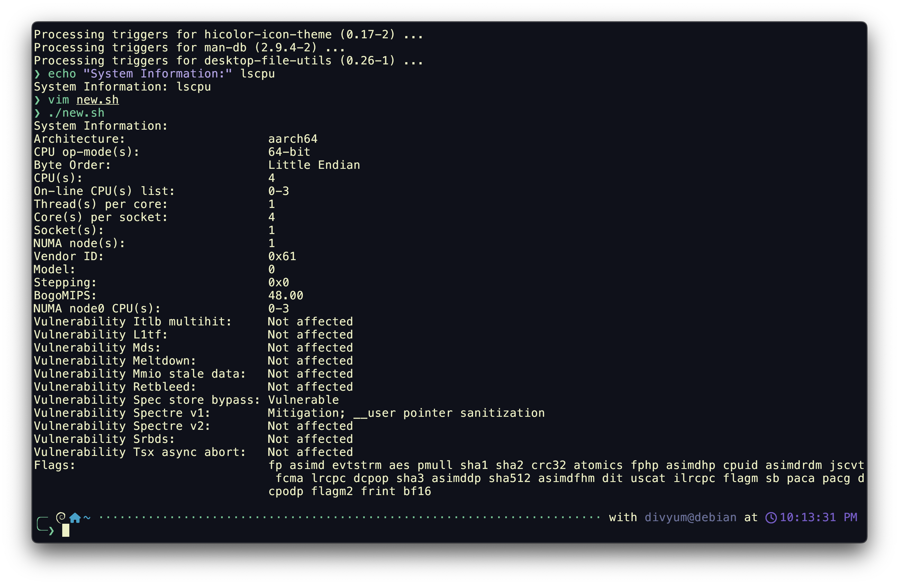
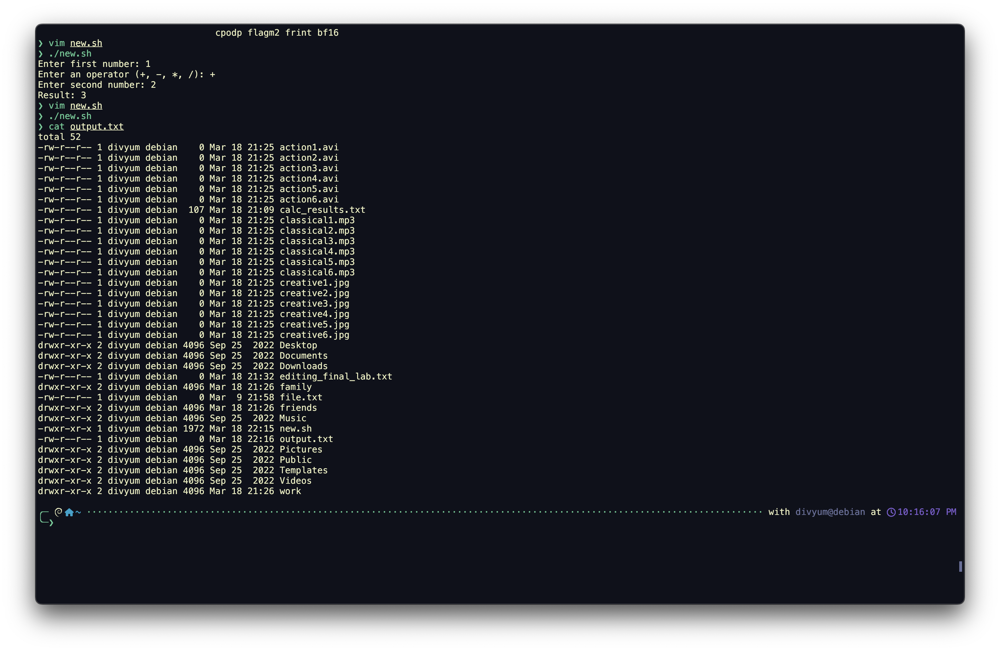

Write shell scripts to print system information, perform basic mathematical calculations with user input, and use redirection operators.
Run the following shell script to display system details:
```bash
echo "System Information:" lscpu ```
Use the following script to take two numbers as input and perform an operation:
```bash
read -p "Enter first number: " num1 read -p "Enter an operator (+, -, *, /): " op read -p "Enter second number: " num2 echo "Result: $((num1 $op num2))" ```
Store command output in a file using redirection:
bash
ls -l > output.txt

